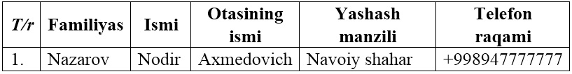
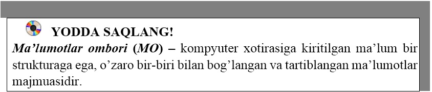

20-DARS. MA’LUMOTLAR OMBORI HAQIDA TUSHUNCHA
Ma’lumotlardan foydalanish, ya’ni ularni ma’lum bir texnologiya asosida yig’ish, saqlash, qayta ishlash va uzatish muhim masalalardan hisoblanadi. Ma’lumot resurslarini shunday tashkil etish lozimki, undan foydalanish maksimal qulaylik va foyda keltirsin. Masala yechishga harakat qilish, ma’lumotlarni ishlash jarayonidagi yangicha yondashish, yangi texnologiyani keltirib chiqardi. Mazkur texnologiyaning asosini ma’lumotlar ombori va banklari tashkil etadi.
Ma’lumotlar ombori (MO) – kompyuter xotirasiga kiritilgan ma’lum bir strukturaga ega, o’zaro bir-biri bilan bog’langan va tartiblangan ma’lumotlar majmuasidir.
Ma’lumotlar modeli – bu ma’lumotlarning o’zaro bog’langan tuzilishlari va ular ustida bajariladigan operatsiyalar to’plamidir.
Ma’lumki, aynan bir axborotni mashina ichki muhitida joylashtirish uchun ma’lumotlarni turli xil tuzilishlari va modellaridan foydalanish mumkin. Ulardan qaysi birini tanlash MO yaratayotgan foydalanuvchining zimmasiga yuklatilgan bo’lib, u ko’plab omillarga bog’liq. MO tuzishning asosiy usullari quyidagilardan iborat:
• Ierarxiv (shajara) model– bu modelda ma’lumotlar daraxtsimon ko’rinishda saqlanadi. Ishlash birligi yozuvdir;
• Tarmoq model – bu modelda daraxtsimon bog’lanish bo’lsada, tugunlardagi tarmoqlanishlarga cheklanish yo’q;
• Realyatsion (o’zaro bog’langan) model – bu modelda ma’lumotlar jadval ko’rinishda saqlanadi.
Ma’lumotlarni ikki xil usuldan foydalanib olish mumkin. Bular tuzilmalashtirilmagan va tuzilmalashtirilgan.
Tuzilmalashtirilmagan – bu ma’lumotlarni tasvirlash usuli haqida kelishuv bo’lmasa, u holda ular tuzilmalashtirilmagan deyiladi.
Tuzilmalashtirilgan – bu ma’lumotlarni tasvirlash usullari haqidagi kelishuv bo’lsa, u holda ular tuzilmalashtirilgan deyiladi.
Ma’lumotlarni tuzilmalashtirilmaganiga quyidagicha misol keltirish mumkin: o’quvchi (Familiyasi, ismi, otasining ismi, yashash manzili, telefon raqami) haqidagi axborotdan iborat ma’lumotlarga quyidagicha yozilgan axborotni ko’rsatish mumkin: Familiyasi – Nazarov, Ismi – Nodir, Otasining ismi – Axmedovich, Yashash manzili – Navoiy shahar, Telefon raqami +998947777777.
Ushbu ma’lumotlarni jadval ko’rinishga keltirsak tuzilmalashtirilgan ma’lumotga aylanadi:



1. Ma’lumotlar ombori deganda nimani tushunasiz?
2. MOning modeli haqida ma’lumot bering?
3. Tuzilmalashtirilgan ma’lumot deganda nimani tushunasiz?
4. Sinfingizdagi o’quvchilarning familiyasi, ismi, tug’ilgan yili, telefon raqami, fanlardan olgan baholari bo’yicha tuzilmalashtirilmagan ma’lumotlarni shakllantiring.

1. 10-sinf darsliklarining mualliflari va chiqgan yili bo’yicha tuzilmalashtirilmagan ma’lumotlarni shakllantiring.
2. Sinfingizdagi o’quvchilarning familiyasi, ismi, tug’ilgan yili bo’yicha tuzilmalashtirilgan ma’lumotlarni shakllantiring.